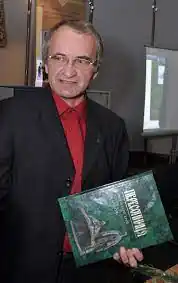
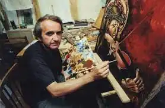

Народився 8 травня 1952 року в Серниках на Рівненщині. Мати Ольга Кирилівна, була вчителькою початкових класів,а батько, Микола Іванович, культпрацівником. Коли Валерію виповнилося два роки, родина переїхала до смт Степань на Рівненщині. Бувши школярем, захопився малюванням, це захоплення підтримували батько та вчитель малювання Степанської середньої школи Григорій Тимофійович Поліщук. Подорожуючи Поліссям, Валерій неодноразово знаходив стародавні артефакти. Поряд з літературою й історією у старших класах школи захопився математикою та фізикою. Закінчивши у 1969 році середню школу з відзнакою саме з цих предметів, вступив до Рівненського інституту інженерів водного господарства.
У 1974 році закінчив Український інститут інженерів водного господарства (м. Рівне). З 1975 по 1992 рр. працював у Науково-дослідному інституті технології машинобудування (м. Рівне). Водночас продовжував займатися малюванням. Першою великою виставкою творів Валерія Войтовича, де експонувалося понад 50 картин, була "Моя Україна", влаштована 17 червня 1988 року в День Героїв Берестечка. Виставка отримала схвальний відгук відомих українських письменників: Миколи Жулинського та Володимира Яворівського.
Після 1992 р. працював у Рівненському райвідділі культури; у 1994 р. кореспондентом газети "Сім днів" (м. Рівне). З 1994 року — директор благодійно-мистецького фонду "Оріана", за сумісництвом — викладач Рівненського державного гуманітарного університету. На ідейність картин Войтовича вплинув Народний Рух, до якого Валерій Войтович приєднався, експонуючи свої роботи під девізом "Моя Україна". В 1990-і видав низку книг, де викладав своє бачення міфів і звичаїв давніх українців: "Український гороскоп", "Молитва до Дажбога", "Сокіл-Род. Легенди та міфи стародавньої України". З 2000 року викладає спецкурс "Давньоукраїнська міфологія" у Національному університеті "Острозька академія". У 2000-і Валерій Войтович зосередився на історіографії Полісся, зокрема Рівненщини. В 2012 році було випущено книгу Г. П. Сербіна "Валерій Войтович. Художник земних і космічних світил" про життєвий і творчий шлях письменника. Книга Валерія Войтовича "Українська міфологія" отримала перше місце у рейтингу "Книжка року 2003" в номінації "Обрії" (енциклопедичні та довідкові видання). Перші три томи "Антології українського міфу" нагороджені Міжнародною премією "Портал".